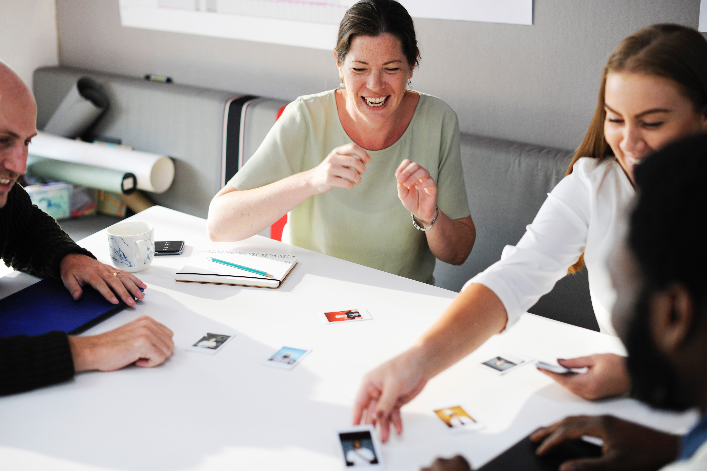
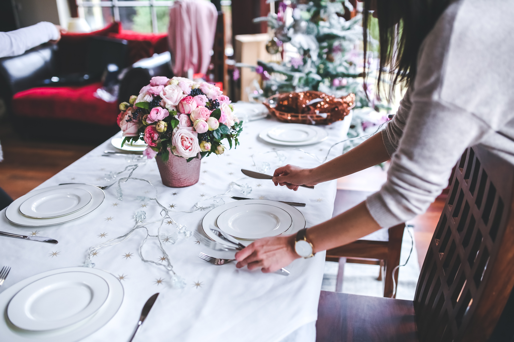
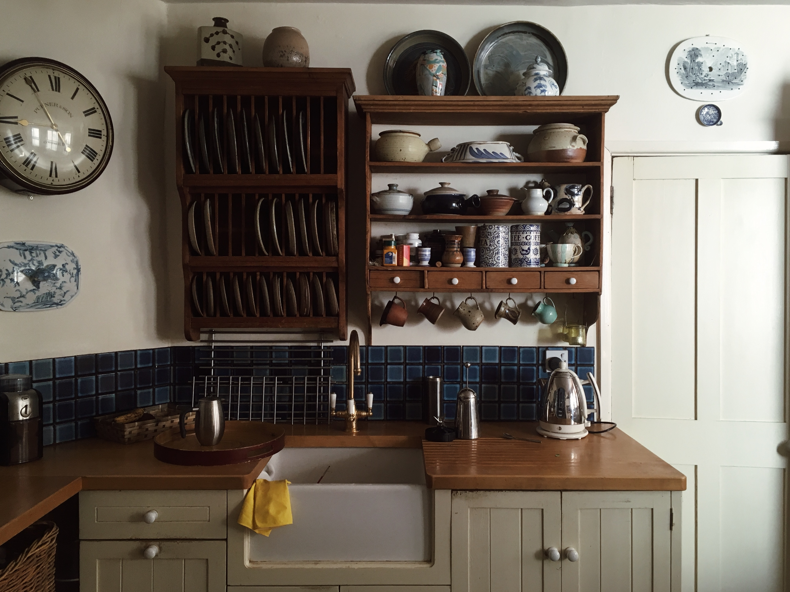

Design Challenge
Defining the Design Challenge was the first step. I used the IDEO Human Centered Design Toolkit as a guide to posing questions to find the root problems of the website for users.

Audience & Goals
Knowing more information about my client and Sharing-economy from research, I was then able to identify two target audiences and develop a hierarchy of goals to meet the need of each audience.
